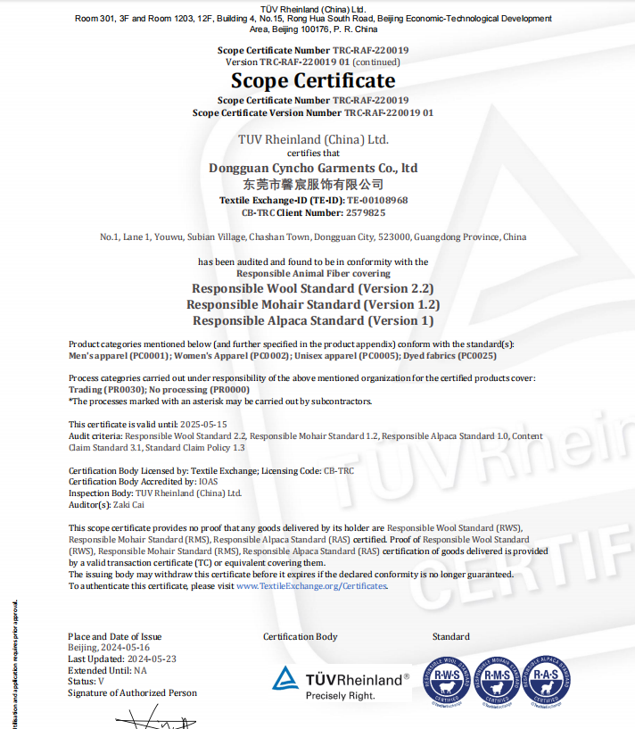

Factory Capability
Cyncho Apparel Factory
See how Cyncho supports apparel production from sampling and material sourcing to quality control and shipment preparation.
Request Factory Quote
Production Process
Inquiry review, sample development, fabric and trim confirmation, bulk production, in-process checking and final inspection.
MOQ
MOQ depends on category, fabric, trims and schedule. Share your style details and target quantity for a practical answer.
Quality Control
We focus on approved sample matching, material consistency, sewing details, measurement review and final production checking.

Sampling Process and Certifications
Sampling helps confirm fit, fabric, trims and construction before bulk production. Cyncho also supports buyers who need documentation and certification-related discussion such as SEDEX, GOTS, GRS or RWS requirements.
Get OEM PricingFactory Capability for Overseas Apparel Brands
Cyncho factory support is designed for brands that need reliable sampling, clear material discussion and production communication before committing to bulk garment manufacturing. Buyers can share tech packs, fit comments, reference samples or target fabrics so the team can evaluate development requirements and production risk.
This factory page connects directly with Cyncho services for OEM apparel manufacturing, private label clothing and custom garment manufacturing.
Request Factory Quote
Send your product details, quantity and materials. We will help review sampling and production feasibility.
Request Factory Quote